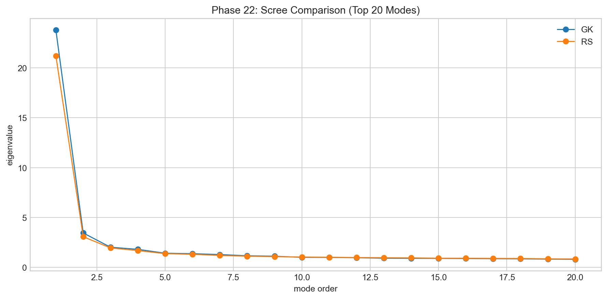
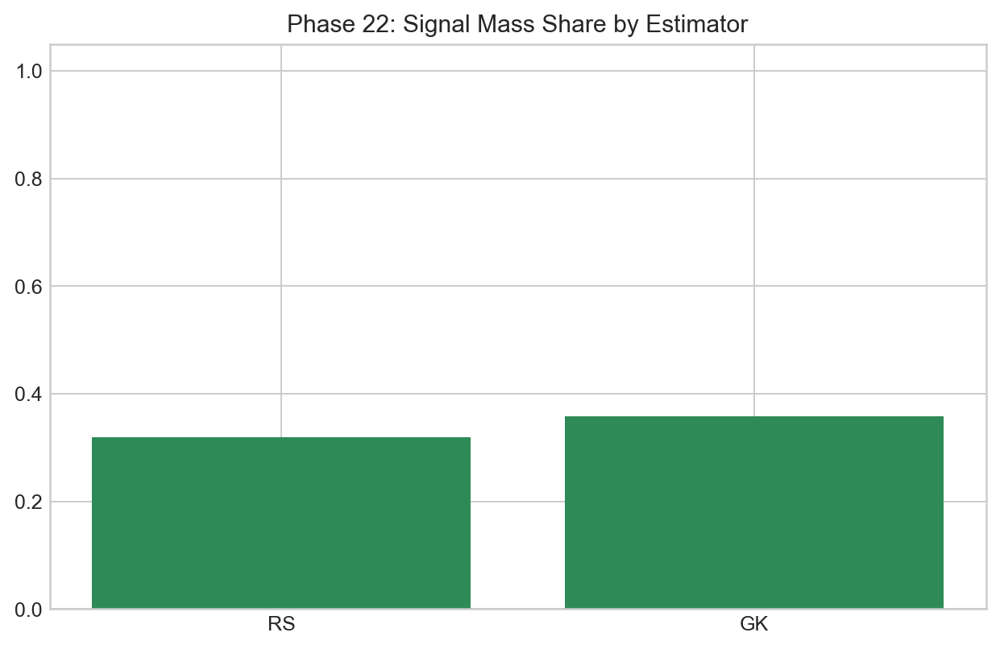
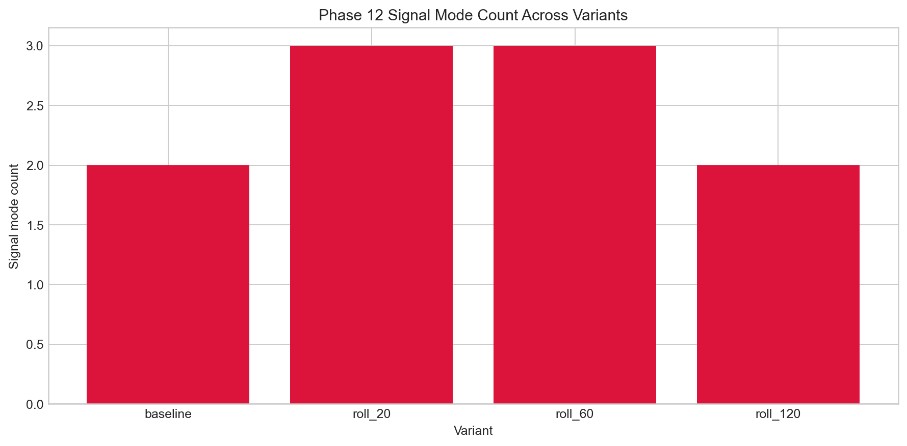
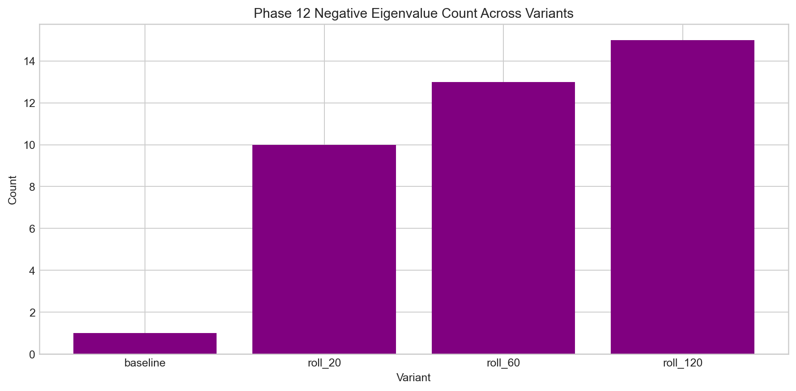

Pipeline and Preprocessing
This post covers the part of the project that determines whether downstream spectral analysis is trustworthy.
Most eigen-analysis quality is decided before decomposition. If transformation and panel construction are unstable, later plots can look convincing while carrying weak signal. This phase therefore treats preprocessing as research work, not setup overhead.
Practical sequence
The workflow starts with OHLC data, builds realized-volatility estimators, applies log transform and asset-wise standardization, then constructs panel variants (raw and smoothed). Estimator behavior is compared in spectral space because a structure that disappears under estimator swap is not structurally reliable.
Estimator-sensitivity outputs repeatedly show the core conclusions surviving RS vs GK replacement. In the key comparison set, effective K and regime counts remain unchanged while concentration metrics shift only modestly under GK. This is a strong indication that the project is not an estimator artifact.
The three figures below summarize that robustness: scree shape consistency, top-1 ratio shift, and total signal-mass share shift.



On smoothing variants
Smoothing is not cosmetic in this pipeline. It can improve concentration while also introducing PSD pathologies under pairwise-overlap estimation. That dual effect is why concentration charts are interpreted jointly with matrix-health diagnostics.
The variant plots below are read together: one for signal count, one for concentration, and one for negative-eigenvalue behavior.



Key takeaway from this phase
Two rules emerged and stayed in force for the rest of the project: keep every transformation auditable, and treat every apparent improvement as a potential distortion until diagnostics confirm otherwise.
Shared reference
Dictionary: terminology map used across all pages.